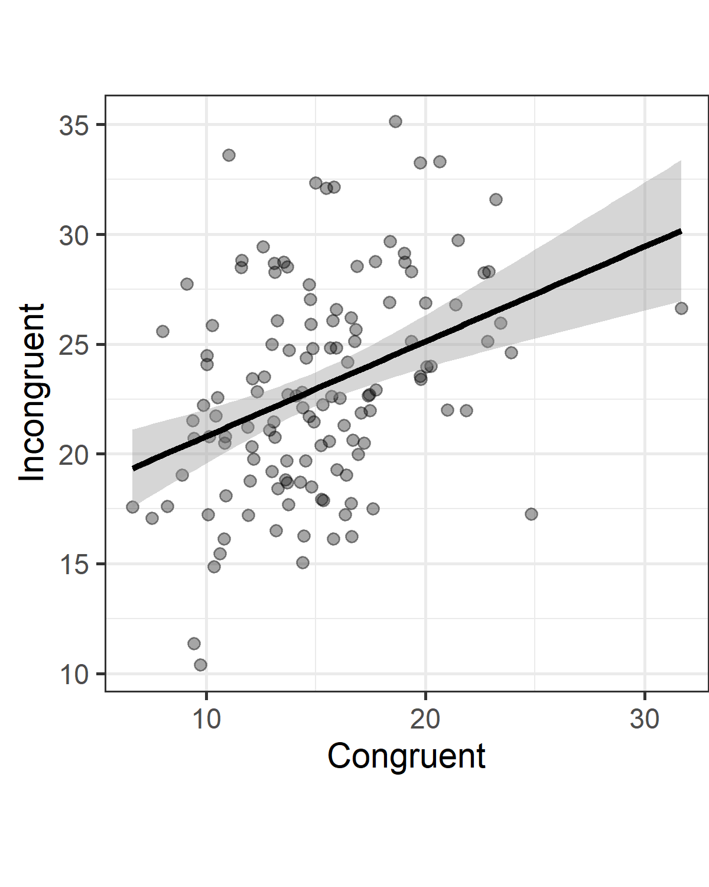

title: “Main Analysis” author: “Somtoo” date: “29 January 2026” format: html —
#This code will check if ggplot2 and reshape2 are installed. #If not, this code will install these packages.if(!require(reshape2)){install.packages('reshape2')}
Here, we analyze a simple dataset of a Stroop experiment. Students in an introduction to psychology course completed an online Stroop task (http://faculty.washington.edu/chudler/java/ready.html) and named the colors in congruent trials (e.g., the word ‘red’ written in a red font) and in incongruent trials (e.g., the word ‘red’ written in a green font). The time they took to name all words was self-reported in seconds (e.g., 21.3 seconds) for both the congruent and incongruent blocks. In this analysis, we are interested in examining whether there is a Stroop effect.
# #run only once to download the data# stroop_data <- read.table("https://raw.githubusercontent.com/Lakens/Stroop/master/stroop.txt", sep = "\t", header = TRUE)# # write.table(stroop_data, file = "stroop.csv", quote=F, row.names=F)data_path <-"./stroop.csv"#This is a variable data path command. It means that as long as this Qmd file is located in the same directory as the data file, you don't need to specify the working directory.stroop_data <-read.csv(data_path, header =TRUE)
Plotting the data
When we plot the reaction times, we can visually see that there are no extreme outliers. It is also clear that response times are generally faster for the congruent trials, compared to the incongruent trials.
#Draw scatterplot# Main scatterplotggplot(stroop_data, aes(x = Congruent, y = Incongruent)) +geom_point(alpha =0.35) +theme_bw(base_size =14) +geom_smooth(method ='lm', formula = y~x, color ='black') +coord_fixed() +ylab("Incongruent") +xlab("Congruent") +theme(plot.margin =unit(c(0, 0, 0.5, 0.5), "lines"))

#Perform the dependent t-test. Store results a ttest_result.ttest_result <-t.test(stroop_data$Incongruent, stroop_data$Congruent, alternative ="two.sided", paired =TRUE, var.equal =TRUE, conf.level =0.95)#The code below reproduces the ESCI spreadsheet for paired observations by Cumming (2012).#store lotal sample size (based on the length of the vector storing congruent RT's)N <-length(stroop_data$Congruent)#Calculate the differences between congruent and incongruent trialsdiff <- stroop_data$Incongruent - stroop_data$Congruent#calculate the pooled standard deviation for the d_av effect size recommended by Cumming. s_av <-sqrt((sd(stroop_data$Congruent)^2+sd(stroop_data$Incongruent)^2) /2) #Calculate Cohen's d following Cumming, 2012d_av <-mean(diff) / s_av#Calculate Hedges'g, or d_unbiased. Note this is approximation of the correction for Hedges'g.d_unb <- (1- (3/ (4* (N -1) -1))) * d_av
Results
The mean reaction time (in seconds) of participants in the Congruent condition (M = 15.1, SD = 4.1) was lower than the mean of participants in the Incongruent condition (M = 23, SD = 4.78, r = 0.37). A dependent t-test indicated that based on our preregistered alpha level of 0.01 we could reject the null-hypothesis, t(130) = 18.04, p < 0.001. As we can expect from the Stroop effect, the standardized effect size is very large, Hedges’ gav = 1.76. The congruency effect is very clear when we plot the data from the two groups.